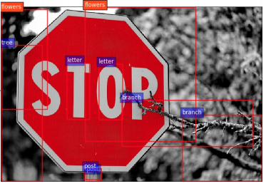
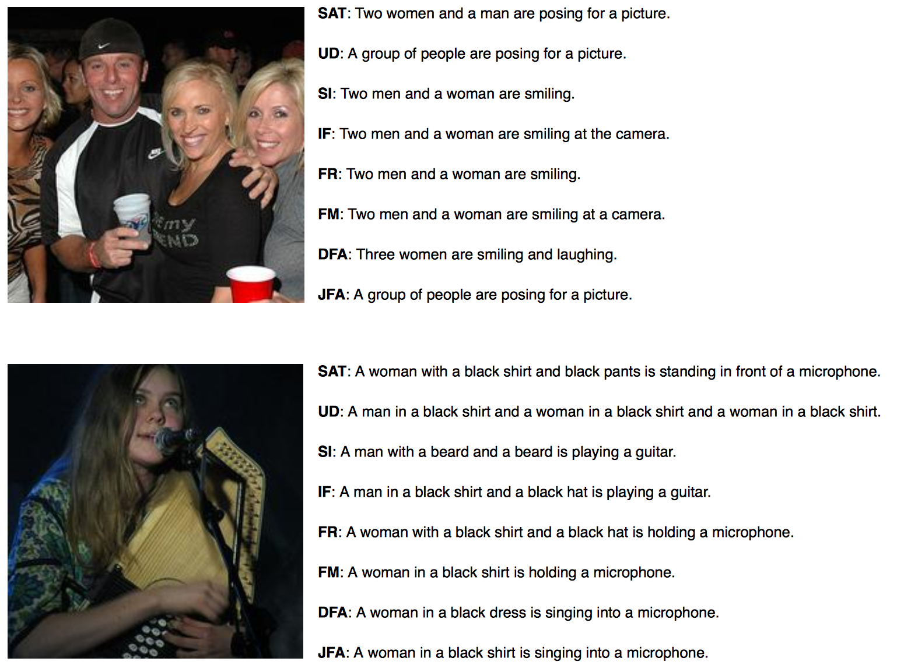
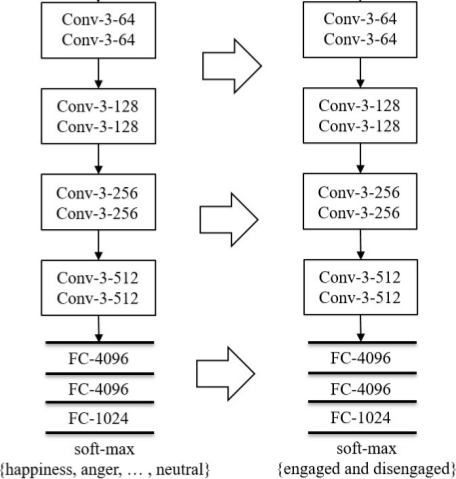
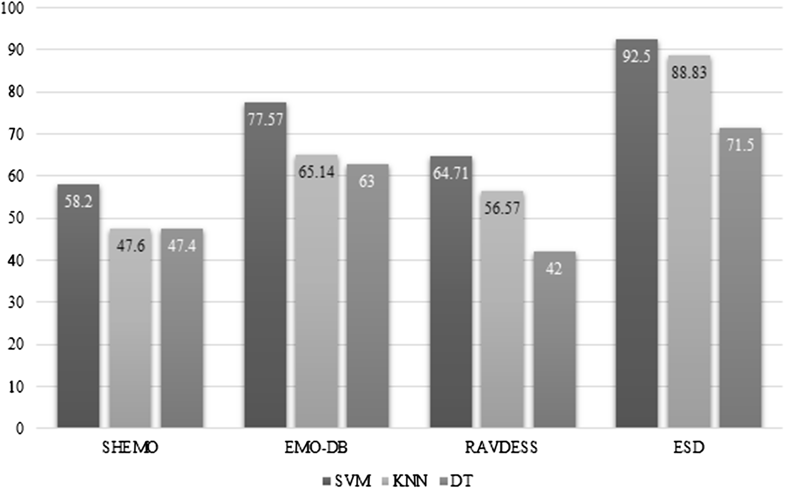
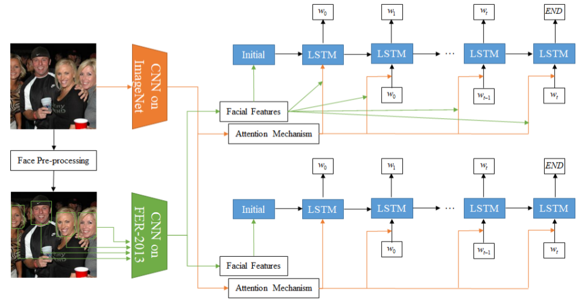

-

Pick-Object-Attack: Type-Specific Adversarial Attack for Object Detection
Omid Nezami, Akshay Chaturvedi, Mark Dras, Utpal Garain
arXiv preprint arXiv:2006.03184, 2020. (Preprint Under Submission)
ABSTRACT
PDF
-

Image Captioning using Facial Expression and Attention
Omid Nezami, Mark Dras, Stephen Wan, and Cecile Paris
Journal of Artificial Intelligence Research (JAIR), 68 (2020): 661-689.
ABSTRACT
PDF
-
Towards Generating Stylized Image Captions via Adversarial Training
Omid Nezami, Mark Dras, Stephen Wan, Cecile Paris, and Len Hamey
Proceedings of the 2019 Pacific Rim International Conference on Artificial Intelligence (PRICAI 2019), Cuvu, Fiji.
ABSTRACT
PDF
CODE
-

Automatic Recognition of Student Engagement using Deep Learning and Facial Expression
Omid Nezami, Mark Dras, Len Hamey, Deborah Richards, Stephen Wan, and Cecile Paris
Proceedings of the 2019 European Conference on Machine Learning and Principles and Practice of Knowledge Discovery in Databases (ECML-PKDD 2019), Wuerzburg, Germany.
ABSTRACT
PDF
CODE
-

ShEMO: A Large-Scale Validated Database for Persian Speech Emotion Detection
Omid Nezami, Paria Jamshid Lou, and Mansoureh Karami
Language Resources and Evaluation, 53.1 (2019): 1-16.
ABSTRACT
PDF
DATA
-

Face-Cap: Image Captioning using Facial Expression Analysis
Omid Nezami, Mark Dras, Peter Anderson, and Len Hamey
Proceedings of the 2018 European Conference on Machine Learning and Principles and Practice of Knowledge Discovery in Databases (ECML-PKDD 2018), Dublin, Ireland.
ABSTRACT
PDF
DATA